ТОП 10 учёных мира
10. Аристотель (384-322 гг. до н.э.)
Ученик Платона и наставник Александра Македонского, 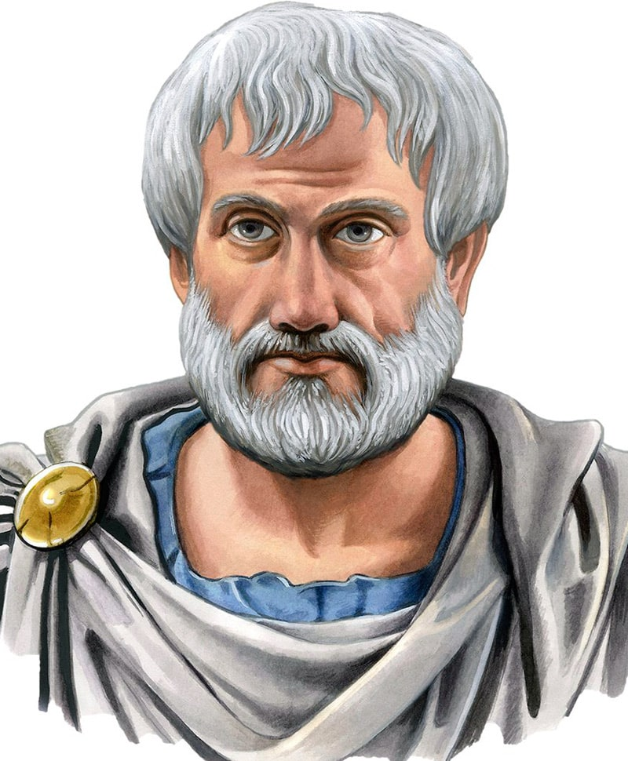Аристотель был гениальным греческим философом и ученым древних времен. Аристотель родился в 384 году до нашей эры. Он был биологом, зоологом, специалистом по этике, политологом и мастером риторики и логики. Он также дал теории в области физики и метафизики. Аристотель получил знания в различных областях благодаря своему обширному уму и потрясающим трудам. Однако в настоящее время сохранилась лишь небольшая часть его произведений. Аристотель собирал коллекции для образцов растений и животных и классифицировал их в соответствии с их характеристиками, что стало стандартом для будущей работы. Далее он дал теории о философии науки. Аристотель также разработал и оценил размер Земли, который Платон считал земным шаром. Аристотель объяснил цепочку жизни, изучая флору и фауну, где она превратилась из простой в более сложную.
9. Архимед (287-212 до н.э.)
Считаясь величайшим математиком в истории, Архимед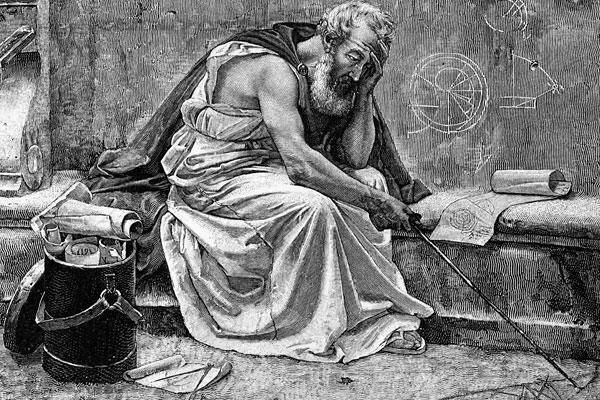 приобрел глубокие и влиятельные знания в области математической физики, которые широко используются в машинах и конструкциях. Архимед, родившийся в 287 году до нашей эры, является одним из лучших ученых, пробившихся как в теории, так и на практике. Он ввел бесконечно малые и заложил основу для исчисления. Он дал описания первой конечной геометрической прогрессии, вычисленных площадей и объемов сферических и параболических сегментов. Он также открыл законы рычага, плотности, равновесия жидкости, плавучести в различных областях статики и гидростатики. Он считается пророком формальной науки, которая началась в Древней Греции. «Дайте мне место, чтобы я смог встать, и я смогу передвигать весь мир», - сказал он, и мы можем по-прежнему восполнить влияние его щедрости даже сегодня. Все остальные ученые после него стоят на его плечах. Хотя большая часть его работ была сожжена в Александрийском музее, остатки дали достаточно идей для современной науки и техники. Закон Архимеда. Конечно, нельзя не рассказать историю знаменитого восклицания «Эврика!» Царь Сиракуз обратился к Архимеду с просьбой проверить золотую корону. У правителя было подозрение, что кузнец при изготовлении использовал не чистое золото, а разбавил сплав более дешевым серебром. Ученый долго ломал голову над решением вопроса и нашел ответ в ванной. Великий физик заметил, что при погружении в ванную тело вытесняет определенное количество воды. Именно это открытие и заставило его воскликнуть «Эврика!». Как утверждают историки, ученый взял корону и слиток золота, который весил столько, сколько кузнецу дали для изготовления короны. Он опустил в воду поочередно эти предметы и выяснил, что корона вытесняет больше воды, чем слиток, несмотря на одинаковый вес. А значит, в сплав кузнец добавил более легкое серебро.
Винт Архимеда.Это изобретение до сих 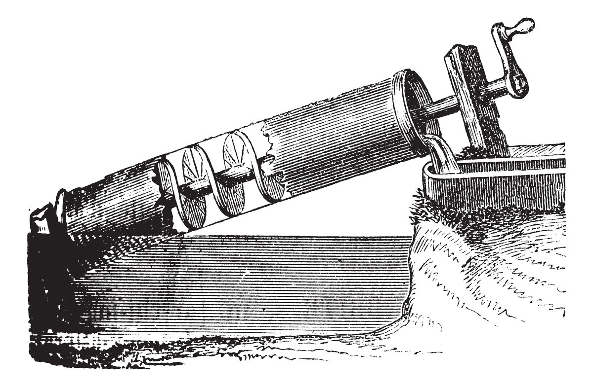пор используется на некоторых фермах и даже небольших электростанциях. Винт помогает перемещать воду снизу вверх, при этом механизм работает, даже если туда попадет мусор или в воде окажется рыба.Историки считают, что винт был изобретен во время строительства знаменитой «Сиракузии» — огромного корабля, вмещавшего 600 человек. Архимед разработал механизм, который позволял откачивать воду из трюма.
8. Галилей (1564-1642 гг. Н.э.)
Галилей родился в Пизе, Италия, в 1564 году, и стал отцом современной науки из-за своих открытий в области астрономии и физики. Его отец отправил изучать медицину, но он выбрал карьеру в области науки и математики и создал первый телескоп для наблюдения за звездами и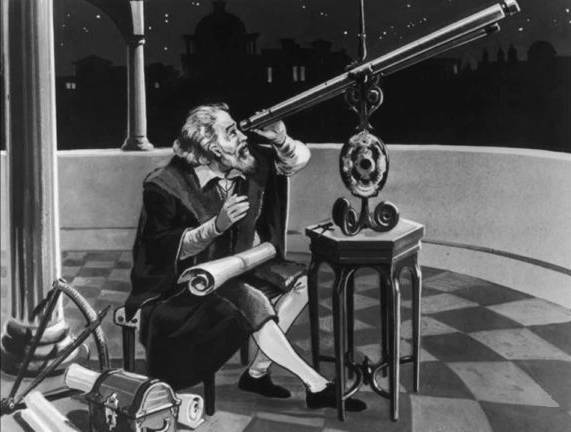 планетами.
Созданный в 1609 году телескоп позволил Галилею начать наблюдать за небесными светилами. Со временем учёному перестало хватать трёхкратного увеличения прибора для проведения полноценных опытов, поэтому в скором времени он изобретает телескоп, который обладал способностью 32-кратного увеличения предметов. Он также открыл закон маятника, наблюдая, как люстра качается в соборе Пизы. Он также обнаружил, что поверхность Луны не была гладкой, но содержала норы и отверстия, и придумал название "кратер". Он также обнаружил 4 вращающиеся луны вокруг Юпитера, которые названы в его честь. Он доказал, что сказал Коперник о том, что Солнце является центром Солнечной системы. Галилей ослеп в старые времена и умер в 1642 году.
7. Майкл Фарадей (1791-1867 гг. Н.э.)
Родившийся в 1791 году британский ученый Майкл Фарадей был сыном кузнеца, который должен был покинуть школу в четвертом классе. Он начал работать переплетчиком и научился читать и писать. Он увлекся наукой и особенно электричеством после того, как изучил много серьезных научных работ в продолжительности. Фарадей особенно известен своими открытиями об электромагнитных индукциях и вращениях, теории поля, диамагнетизации и магнитооптическом эффекте. Этот скромный гений изобрел электродвигатель и кольцо Фарадея.
В 1820-м ученый начал ставить опыты, чтобы выяснить, 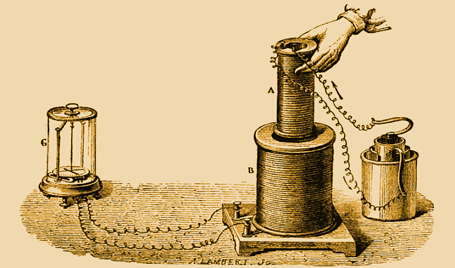как взаимодействует электричество и магнитное поле. На то время уже существовало понятие «источник постоянного тока», описанное Вольтом, знали, что такое электрическая дуга, электролиз и электромагнит. В это время происходит бурное развитие электростатики и электродинамики, широко известными были результаты опытов Савара, Био, Лапласа, касающиеся магнетизма и электричества. Напечатали научный труд Ампера по исследованиям электромагнетизма. Пытливый и любопытный характер Фарадея заставил его читать лекции по химии и преподавал в Королевском институте в качестве лектора позже, когда Хамфри Дэви ушел в отставку. Фарадей также опубликовал исследовательские работы по оптическому обману, конденсации газов и изоляции бензола от газойлей. Он также написал книги на тему «Экспериментальные исследования в области электричества» и «Химическая история свечи». Фарадей умер в 1867 году.
6. Томас Алва Эдисон (1847-1931 гг. Н.э.)
«Волшебник Менло-Парка» по прозвищу Томас Алва Эдисон родился в 1847 году. Превосходный как ученый и изобретатель, Эдисон запатентовал огромное количество 1093 изобретений за свою жизнь. Большинство изобретений Эдисона - это батареи, фонографы, цемент, горная промышленность, телеграф, освещение и питание. Он также улучшил телефон, сделанный Грэмом Беллом, и изобрел кинетоскоп, который использовался для просмотра движущихся фильмов.
В 1879-м, 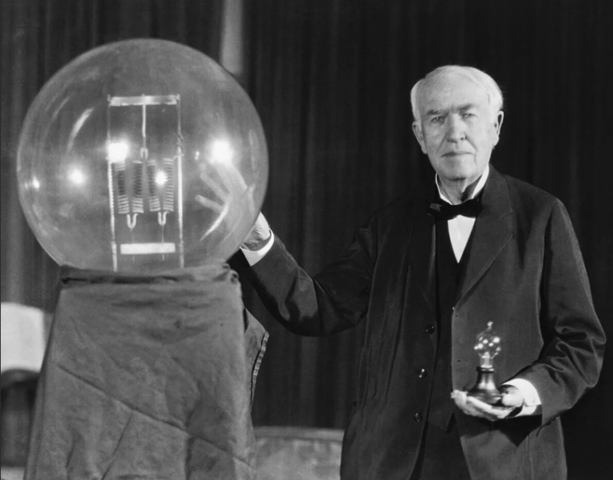в мире появилось самое известное из всех изобретений Эдисона – усовершенствованная электролампочка, которая имела гораздо большую продолжительность работы и была недорогой в производстве. Лампы, которыми пользовались в те времена, работали не более двух часов, были энергозатратными и дорогостоящими. Томас сказал, что готов осветить несгораемыми лампами весь Нью-Йорк, причем их сможет приобрести кто угодно. Он начал экспериментировать, чтобы подобрать подходящий материал для нити накаливания, Томас проверил шесть тысяч образцов, пока не выбрал угольное волокно. Срок его горения составлял 13,5 часа, позже Эдисон сумел увеличить его до 1200 часов.Его видели работающим почти более 20 часов в день. Эдисон разработал цифровую систему голосования с помощью своего электрографического диктофона для законодательных органов парламента. Он также предложил идеи по сохранению фруктов, сохраняя их в вакууме. Эдисон впервые предложил аккумуляторные батареи, которые позже использовал Генри Форд в своем автомобиле. «Гений - это один процент вдохновения и 99 процентов пота» - одна из самых известных цитат этого гения. Он умер в 1931 году.
5. Мария Кюри (1867-1934 гг. Н.э.)
Мария Кюри держит рекорд для первой 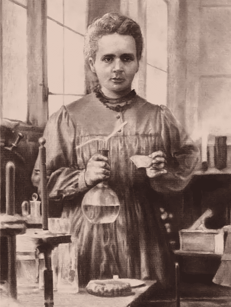женщины, которая будет награждена Нобелевской премией. Изобретатель и ученый Кюри родилась самой младшей из пяти детей в 1867 году в Варшаве, Польша. Мари Кюри всегда оставалась источником вдохновения и мотивации для разных женщин-ученых из-за ее решимости работать. Она изобрела первый мобильный рентгеновский аппарат, который помог проверить раненых солдат на поле боя. Радий - еще одно замечательное изобретение от нее. Кюри экспериментировала с различными элементами, чтобы проверить их радиоактивность, и обнаружила торий. Она также изобрела смолу, которая была источником излучения в смеси, более мощной, чем уран или торий. Ее также называют «матерью атомной бомбы» с ее изобретением радиоактивных материалов. В 1903 году трое ученых – супруги Кюри, Анри Беккерель стали лауреатами Нобелевской премии в области физики за успехи в исследовании явлений радиации. В первых списках награжденных Марии не значилось, и только вмешательство Мангуста Густава Миттаг-Леффлера, защитника прав женщин-ученых, позволило восстановить справедливость. Однако, несмотря на весь ее блеск, тяжелую работу и терпение в тщательных экспериментах, которые она провела, ее собственное изобретение убило ее из-за радиационного отравления в 1934 году.
4. Луи Пастер (1822-1895 гг. Н.э.)
Луи Пастер внес поразительный вклад в области науки и медицины. Этот гений родился в 1822 году и всю жизнь работал в области химии и микробиологии. Пастер был первым в мире ученым, изучавшим ферментацию в пищевых элементах, вызванную микробами. Он также рассказал о биогенезе и предложил теорию, названную «Теорией микробов». Он также создал процесс тонирования и обработки молока без ущерба.
Пастеризация. Прорыву в научных изысканиях 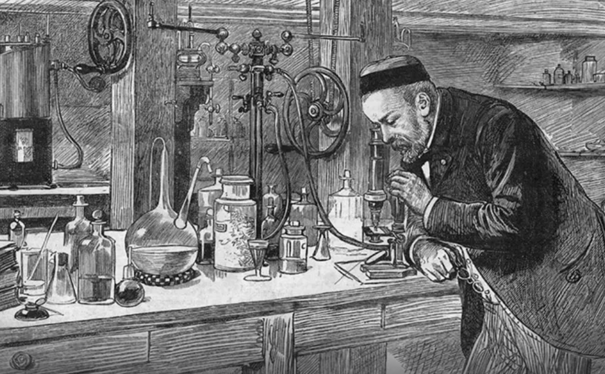учёного содействовала потребность решить практическую задачу. В 1864 году к Пастеру обратились виноделы с просьбой помочь разобраться в причинах порчи вина. После изучения состава напитка микробиолог открыл, что в нём находились не только дрожжевые грибки, но и другие микроорганизмы, которые приводили к порче продукта. Затем учёный задумался над тем, как избавиться от этой проблемы. Исследователь предложил нагревать сусло до 60 градусов, после чего микроорганизмы погибают.Пастера также считают первым человеком на земле, который когда-либо обнаружил лекарство от послеродовой лихорадки и сделал вакцины от бешенства и сибирской язвы. Он также объяснил асимметрию в различных кристаллах на молекулярной основе. Его широта достижений и подходов в различных областях открытий и изобретений делает его велчиайшим гением. Он умер в 1895 году.
3. Сэр Исаак Ньютон (1643-1727 гг. Н.э.)
Сэр Иссак Ньютон родился в 1643 году в Вулстропе, Англия. Он наиболее известен своим законом о гравитации. Он был плохим учеником в школе или в управлении семейным имением. Однако он любил собирать механические игрушки и модели ветряных мельниц. Ньютон объяснил теорию гравитации, придумав исчисление, поскольку никакие другие принципы не могли объяснить это. Новая революция в математике, исчисление было выведено из его биномиальной теоремы в бесконечные ряды, которые точно могли измерить площадь внутри кривой или скорости ее изменения. Он также объяснил теорию приливов, которая произошла из-за гравитационного воздействия луны . Он также изобрел отражающий телескоп.
Законы Ньютона можно найти в 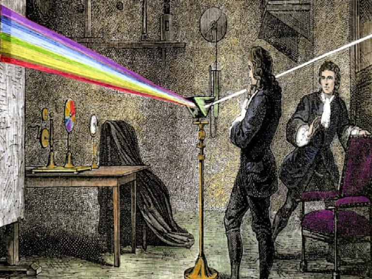различных областях механики, оптики и химии. С 1665 по 1667 годы Исаак жил в родовом поместье в Вусторпе. Тогда Англия находилась во власти бубонной чумы, воевала с Голландией, и поэтому университет закрыли. Однако и дома он не прекращает своих научных изысканий. Основной интерес в те годы для Ньютона представляла оптика. Его интересовал вопрос преодоления хроматической аберрации в линзовых телескопах, и изучение этого явления привело его к открытию дисперсии. Он ставил эксперименты для познания физической природы света. Его опыты и сейчас проводят во многих вузах. Он был посвящен в рыцари с титулом "сэр королевы Анны" в 1705 году. Ньютон умер в возрасте 84 лет, в 1727 году.
2. Альберт Эйнштейн (1879-1955 гг. Н.э.)
Эйнштейн родился в 1879 году в Ульме и 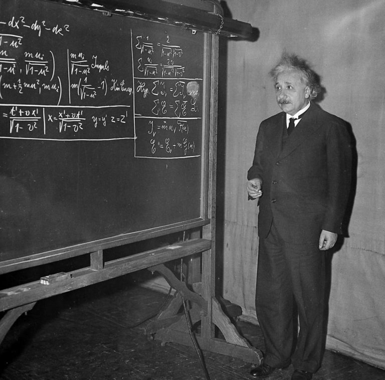считается одним из величайших ученых-революционеров, которых когда-либо знал мир. «Человек столетия» имеет несколько впечатляющих работ по физике, которые даже делают его отцом современной физики за его вклад в развитие общей теории относительности. Самое известное в мире уравнение E = mc2, на котором основана бомба, исходит из его теории. Специальная теория относительности Эйнштейна, одного из величайших ученых 20-го века, произвела революцию в физике, которая даже бросила вызов ученым в ЦЕРН. Гениальность ума Альберта Эйнштейна для научного прогресса вызывает неизмеримые изменения в мире. Со своим высоким интеллектом, он был также знаменитостью с его кокетливым поведением, которое могло произвести впечатление на любую женщину. Этот редкий гений был удостоен Нобелевской премии в 1921 году «За работу по теоретической физике и за открытие фотоэлектрического эффекта». Величайший из физиков Эйнштейн умер в 1955 году в Принстоне.
1. Никола Тесла (1856-1943 гг. Н.э.)
Этот ученый, родившийся в Сербии, был первым в списке из-за его огромных знаний в различных областях науки и техники. Без сомнения, этот парень 1856 года рождения был крутым фанатом. Он мог говорить на 8 языках, полностью прочитать одну книгу за одно чтение, создать устройство, просто увидев его один раз и ничего не записав. Забавным фактом о нем было то, что он был целибатом всю свою жизнь. Тесла сам разработал почти все и не раскрыл ничего из того, что позже было изобретено другими учеными в его время. Тесла генерировал переменный ток до того, как Эдисон узнал об обвинениях ("Война токов"). Маркони, получивший благородный приз за изобретение радио, использовал все идеи Теслы. Рентгеновские снимки Рентгена, RADAR Уотсон-Ватта были разработаны Николой Теслой. Тесла почти ничего не делал. Первая гидроэлектростанция в Ниагарском водопаде, эксперименты с криогенной техникой, транзисторы, радиоволны из космоса были построены Теслой. Пульт дистанционного управления, неоновая подсветка, современный электродвигатель, - лучшие изобретения Тесла. Он был настоящим гением. Однако большинство его идей и изобретений были либо скопированы, украдены, либо взяты кем-то 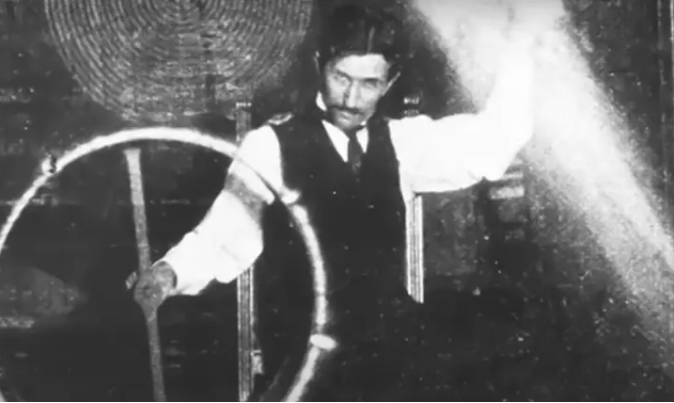другим. Тесла сделал способ зарядить дом электрическим освещением для целей электричества, но не поделился этим, думая, что кто-то другой возьмет его. Этот невероятный ум создал революцию своими изобретениями. Он был мыслителем будущего, и его мысли будут работать на любых длинах волн. Изобретенное в 1896 году устройство назвали «катушкой Теслы». Этот прибор генерирует напряжение в несколько миллионов вольт и создает в воздухе молнии. Однако он трагически погиб в гостиничном номере и был найден мертвым в 1943 году.